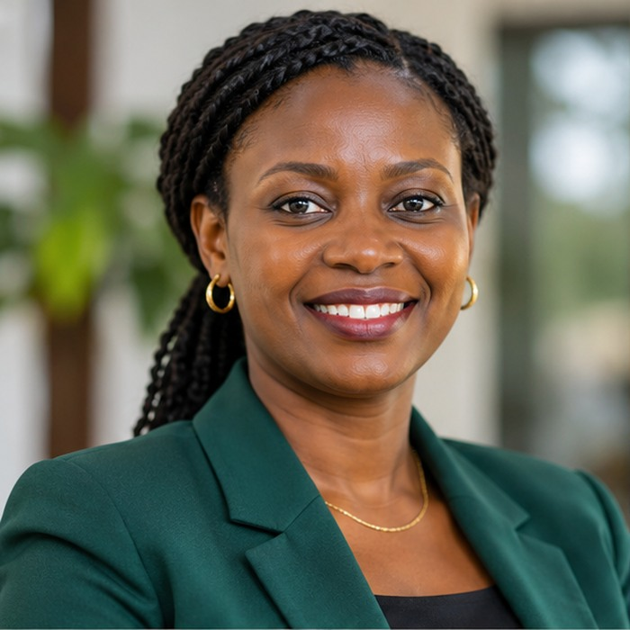
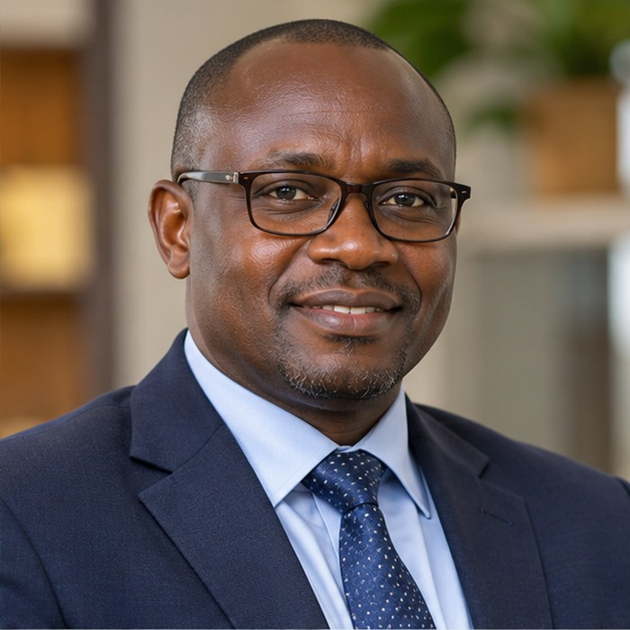
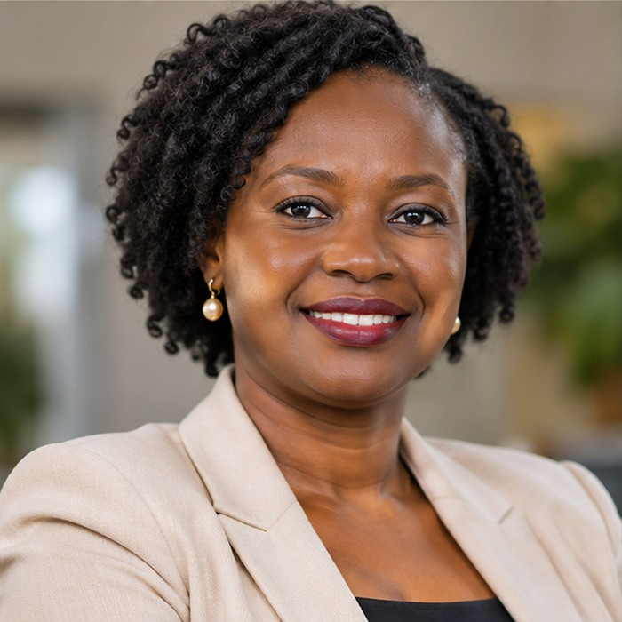
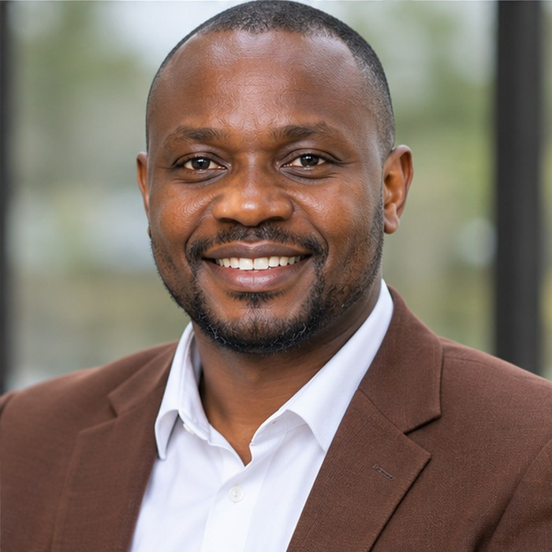

Dr. Sarah Nansubuga
Coffee Quality Researcher
Uganda Coffee Innovation Centre
Dr. Nansubuga researches ways to improve coffee quality from harvest to export. Her work supports farmer training and practical post-harvest innovation.
Meet a fictional line-up of researchers, entrepreneurs and coffee industry professionals.
These sample biographies and portrait illustrations were created for this examination website.

Coffee Quality Researcher
Uganda Coffee Innovation Centre
Dr. Nansubuga researches ways to improve coffee quality from harvest to export. Her work supports farmer training and practical post-harvest innovation.

Regional Coffee Market Analyst
East Africa Coffee Insights
Mr. Okello studies demand, pricing and export trends across regional markets. He advises coffee enterprises on finding new customers and building resilient businesses.

Value Addition Specialist
Coffee Enterprise Network Uganda
Ms. Namatovu helps local processors develop stronger coffee brands and products. She champions entrepreneurship opportunities for women and young professionals.

Agri-tech Entrepreneur
AgroConnect Uganda
Mr. Kato builds practical digital solutions for smallholder farmers and agribusinesses. His work focuses on traceability, mobile market information and financial inclusion.
| Name | Organisation | Country | Session Title |
|---|---|---|---|
| Prof. Rebecca Namuli | Makerere Coffee Research Group | Uganda | Climate-Smart Coffee Farming |
| Mr. Joseph Mwangi | East Africa Coffee Exchange | Kenya | Regional Trade and Market Access |
| Ms. Amina Dlamini | African Sustainable Coffee Forum | South Africa | Sustainability and Certification |
| Dr. Peter Ochieng | Regional Crop Research Institute | Kenya | Research & Next-Generation Coffee Varieties |
Researchers, students and industry practitioners are invited, as part of this fictional event brief, to propose original papers on coffee production, sustainability, processing, technology, market access and policy. Submissions should highlight practical findings or new approaches with clear value to Uganda's coffee sector.
Submit an abstract of up to 300 words with a title, author details, institutional affiliation, keywords and a short statement of relevance. Selected authors would be asked for a full paper of 3,000–5,000 words, with citations and an ethical declaration; this demonstration site does not accept submissions.
| Milestone | Date | Status |
|---|---|---|
| Abstract submission deadline | 30 April 2026 | Closed |
| Notification of acceptance | 15 June 2026 | Completed |
| Final paper submission | 31 July 2026 | Closed |
Illustrative dates only. All dates are in 2026 and have passed.